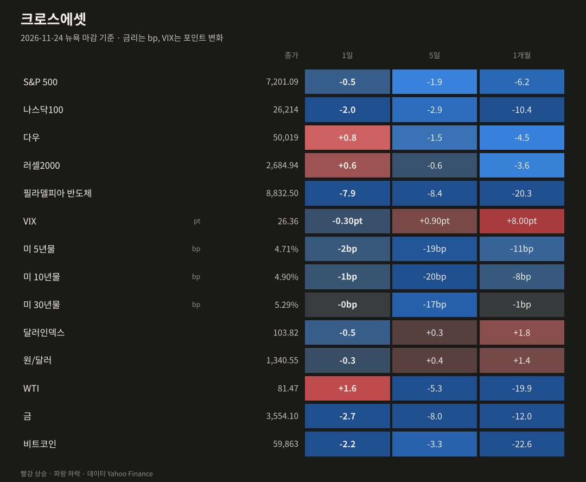
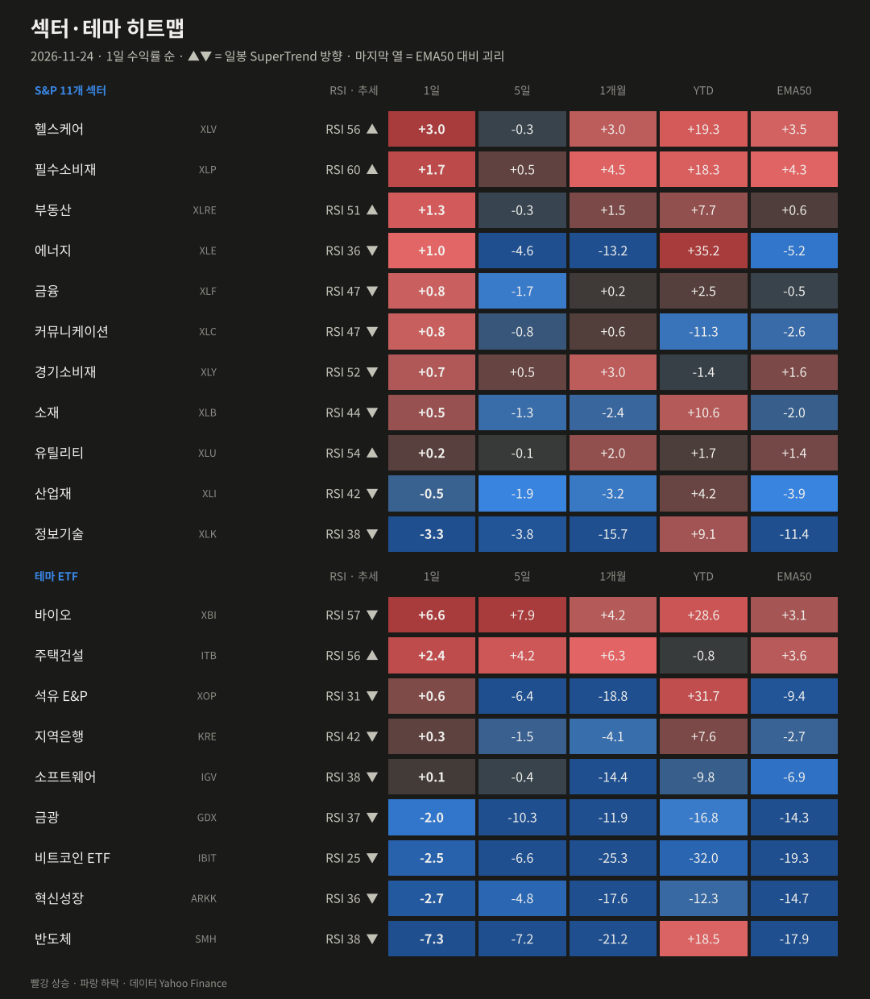
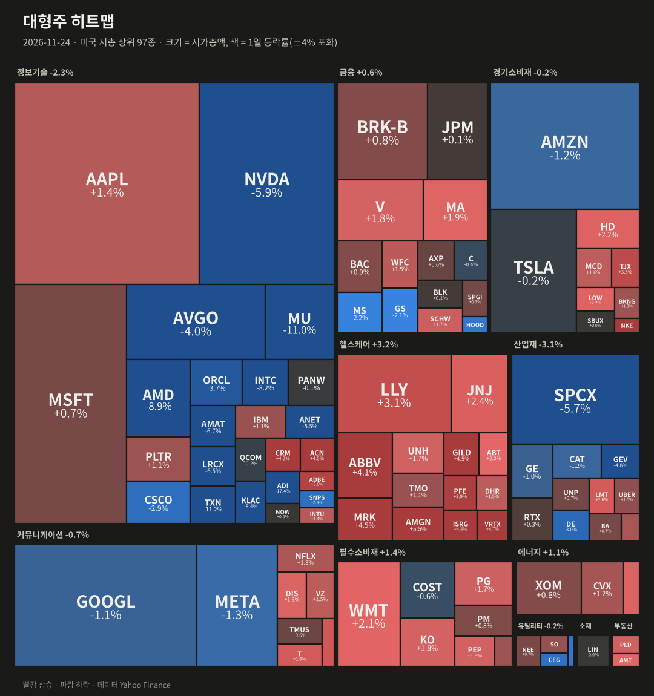
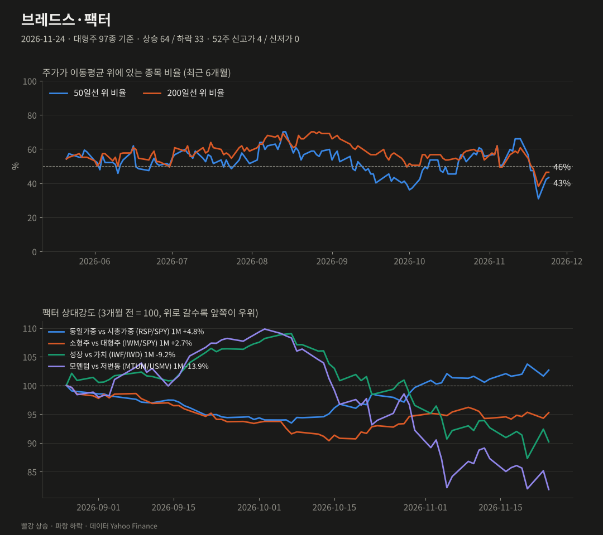
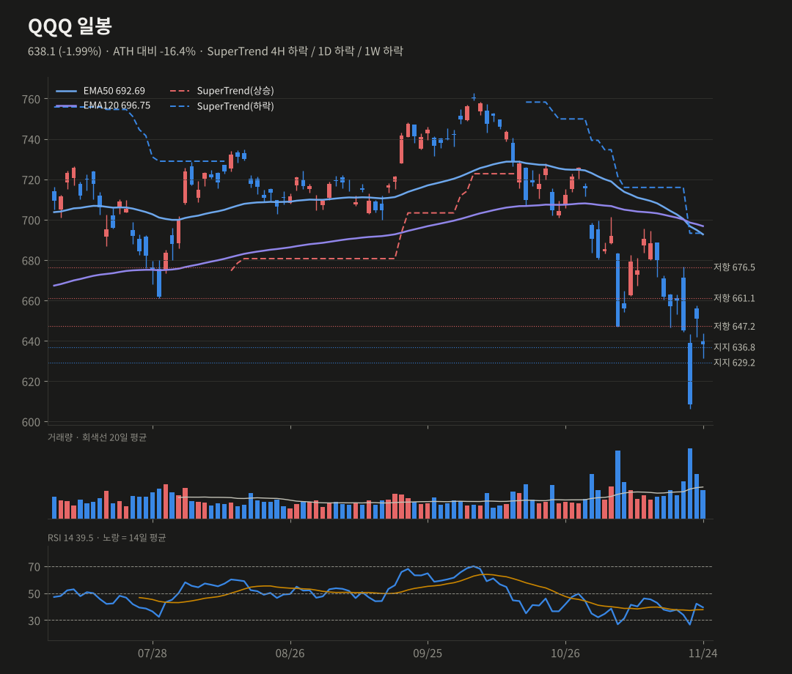
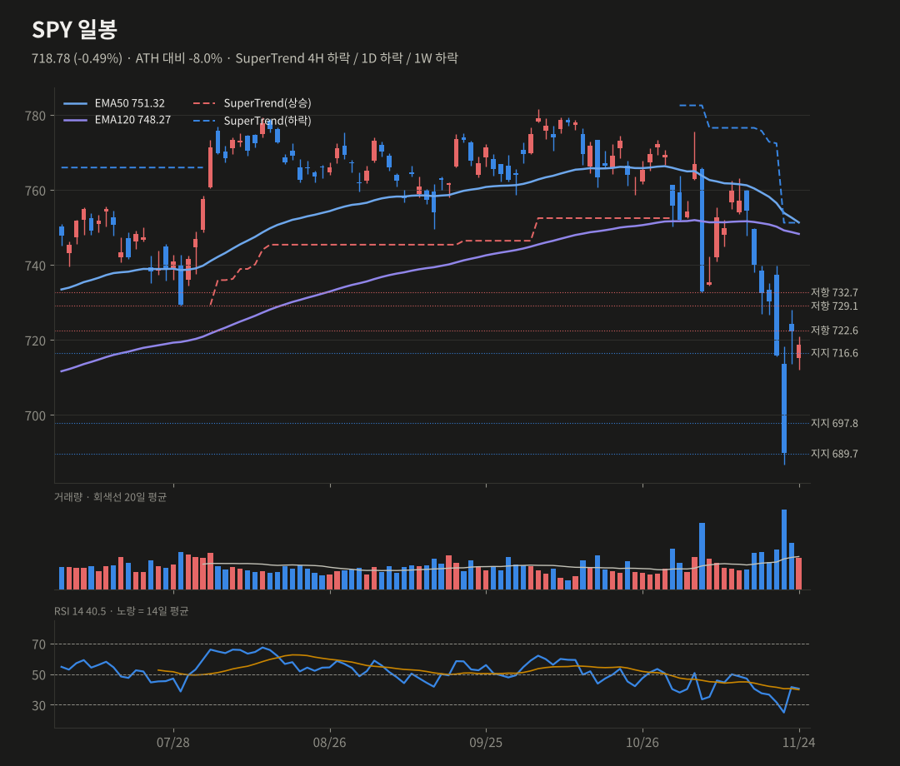
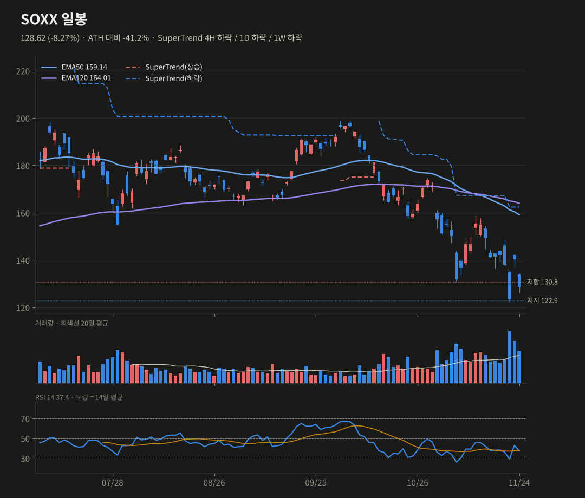
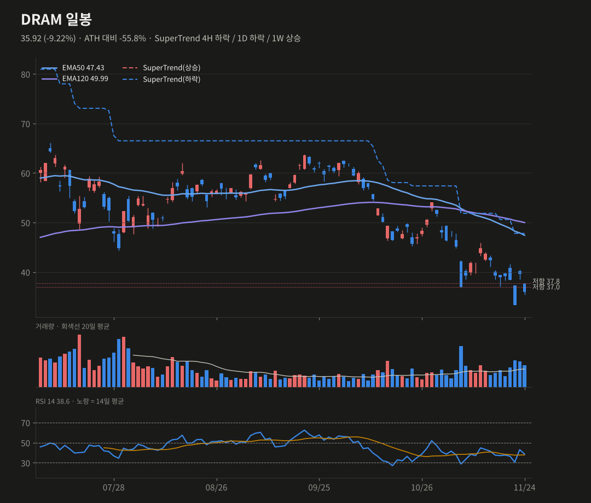

미증시 마감 브리핑
11/24(화) 뉴욕 마감 기준 · 생성 2026-11-25 06:32 KST
ADI −17.4%에 반도체가 −7.9% 되밀려 나스닥100 −2.0%, 다우는 +0.9%였어요.
S&P 5007,201.09-0.50%
나스닥10026,214-1.99%
다우50,019+0.85%
러셀20002,684.94+0.57%
반도체(SOX)8,832.50-7.88%
VIX26.36-0.30pt
미 10년물4.90%-1.40bp
원/달러1,340.55-0.28%
요약
- ADI −17.4%에 반도체 지수 −7.9%, 월요일 상승분의 64%를 반납했어요.
- 헬스케어 +3.0%·다우 +0.9%로 상승 종목이 하락의 두 배였어요.
- SOXX·DRAM은 지지를 내줘 단기 10%p 내렸고, SPY는 716.6을 지켰어요.
- 델 시간외 +2.8%, 수요일 밤 PCE·GDP 뒤 목요일은 휴장이에요.
종합 판단
월요일 반등을 이끈 반도체가 하루 만에 상승분의 64%를 반납했지만, 상승 종목이 하락의 두 배였고 헬스케어·필수소비재·동일가중이 강해 시장 전체가 무너진 날은 아니에요. 돈이 반도체·AI 서버에서 방어주로 옮겨 간 하루예요. SOXX·DRAM은 지지(130.8, 38.4)를 내주고 MACD가 다시 꺾여 확률을 내렸고, SPY는 716.6을 지켜 그대로 뒀어요. 델의 호실적(시간외 +2.8%)이 AI 하드웨어 심리를 받칠지, 수요일 밤 PCE·GDP가 12월 인상 기대를 바꿀지가 휴장 전 변수예요.
월요일 반등을 이끈 반도체가 하루 만에 상승분의 64%를 반납했지만, 상승 종목이 하락의 두 배였고 헬스케어·필수소비재·동일가중이 강해 시장 전체가 무너진 날은 아니에요. 돈이 반도체·AI 서버에서 방어주로 옮겨 간 하루예요. SOXX·DRAM은 지지(130.8, 38.4)를 내주고 MACD가 다시 꺾여 확률을 내렸고, SPY는 716.6을 지켜 그대로 뒀어요. 델의 호실적(시간외 +2.8%)이 AI 하드웨어 심리를 받칠지, 수요일 밤 PCE·GDP가 12월 인상 기대를 바꿀지가 휴장 전 변수예요.
무엇이 시장을 움직였나
- 반도체 되돌림: 필라델피아 반도체가 −7.9%로 월요일 상승분(+14.0%)의 약 64%를 반납했어요. 마이크론 −11.0%, AMD −8.9%, 인텔 −8.2%, 엔비디아 −5.9%(월요일 상승분의 약 4분의 1 반납)예요(StockTitan).
- ADI −17.4%: 4분기 매출 43.7억 달러(+42%)·EPS 4.06달러로 예상을 넘었지만, 1분기 EPS 가이던스 3.82달러가 블룸버그 컨센서스에 못 미쳤고 재고일수가 134일에서 141일로 늘었어요(MoneyCheck). 같은 아날로그 업체 TI도 −11.3%였어요.
- AI 서버주: HPE가 2027회계연도 클라우드·AI 영업이익률을 약 14%(직전 분기 18.4%)로 제시해 −16.3%였고, 실적을 앞둔 델도 −11.8%로 같이 밀렸어요(Yahoo Finance).
- 방어주로 이동: 헬스케어가 +3.0%로 1위예요. 사노피가 인스메드를 주당 175달러, 약 410억 달러에 현금 인수하기로 해 인스메드 +14.1%, 바이오 ETF +6.6%였고 릴리 +3.1%, 머크 +4.5%, 암젠 +5.5%도 올랐어요(StockTitan). 필수소비재 +1.7%, 부동산 +1.3%예요.
- 금리·원자재: 10년물 4.90%(−1.4bp), 달러인덱스 −0.5%, WTI +1.6%(81.5달러), 금 −2.7%예요. VIX는 26.4로 거의 그대로였고, 12월 회의 25bp 인상 확률은 약 95%로 반영돼 있어요(Yahoo Finance).
장 마감 후·시간외
- 델이 3분기 매출 549억 달러(+103%, 예상 493억)·EPS 9.45달러(예상 6.59)를 내 시간외 +2.8%예요(TipRanks). 워크데이 −3.2%, 오토데스크 −3.8%예요.
- QQQ 637.5(−0.1%), SPY 718.2(−0.1%), SOXX 128.7(0.0%), DRAM 35.9(−0.1%), 엔비디아 153.9(−1.0%)로 시간외는 잠잠해요(마감 37분 기준).

| 자산 | 종가 | 1일 | 5일 | 1개월 |
|---|---|---|---|---|
| S&P 500 | 7201.09 | -0.50% | -1.90% | -6.20% |
| 나스닥100 | 26214.17 | -1.99% | -2.92% | -10.45% |
| 다우 | 50018.7 | +0.85% | -1.46% | -4.47% |
| 러셀2000 | 2684.94 | +0.57% | -0.63% | -3.64% |
| 필라델피아 반도체 | 8832.5 | -7.88% | -8.40% | -20.31% |
| VIX | 26.36 | -0.30pt | +0.90pt | +8.00pt |
| 미 5년물 | 4.712 | -1.6bp | -18.8bp | -11.2bp |
| 미 10년물 | 4.904 | -1.4bp | -19.9bp | -8.2bp |
| 미 30년물 | 5.292 | -0.2bp | -16.6bp | -0.9bp |
| 달러인덱스 | 103.82 | -0.48% | +0.32% | +1.82% |
| 원/달러 | 1340.55 | -0.28% | +0.37% | +1.42% |
| WTI | 81.47 | +1.62% | -5.28% | -19.94% |
| 금 | 3554.1 | -2.66% | -8.02% | -11.99% |
| 비트코인 | 59863.03 | -2.20% | -3.29% | -22.60% |

| 섹터·테마 | 1일 | 5일 | 1개월 | YTD | RSI | 일봉 추세 |
|---|---|---|---|---|---|---|
| 바이오 XBI | +6.56% | +7.94% | +4.22% | +28.6% | 57 | 하락 |
| 헬스케어 XLV | +2.95% | -0.28% | +3.03% | +19.3% | 56 | 상승 |
| 주택건설 ITB | +2.42% | +4.18% | +6.33% | -0.8% | 56 | 상승 |
| 필수소비재 XLP | +1.66% | +0.46% | +4.46% | +18.3% | 60 | 상승 |
| 부동산 XLRE | +1.31% | -0.30% | +1.54% | +7.7% | 51 | 상승 |
| 에너지 XLE | +0.97% | -4.59% | -13.20% | +35.2% | 36 | 하락 |
| 금융 XLF | +0.83% | -1.68% | +0.16% | +2.5% | 47 | 하락 |
| 커뮤니케이션 XLC | +0.82% | -0.77% | +0.58% | -11.3% | 47 | 하락 |
| 경기소비재 XLY | +0.68% | +0.53% | +3.03% | -1.4% | 52 | 하락 |
| 석유 E&P XOP | +0.60% | -6.39% | -18.84% | +31.7% | 31 | 하락 |
| 소재 XLB | +0.54% | -1.32% | -2.36% | +10.6% | 44 | 하락 |
| 지역은행 KRE | +0.32% | -1.54% | -4.08% | +7.6% | 42 | 하락 |
| 유틸리티 XLU | +0.18% | -0.05% | +2.00% | +1.7% | 54 | 상승 |
| 소프트웨어 IGV | +0.09% | -0.41% | -14.40% | -9.8% | 38 | 하락 |
| 산업재 XLI | -0.53% | -1.91% | -3.20% | +4.2% | 42 | 하락 |
| 금광 GDX | -1.96% | -10.31% | -11.91% | -16.8% | 37 | 하락 |
| 비트코인 ETF IBIT | -2.48% | -6.59% | -25.34% | -32.0% | 25 | 하락 |
| 혁신성장 ARKK | -2.74% | -4.77% | -17.57% | -12.3% | 36 | 하락 |
| 정보기술 XLK | -3.26% | -3.78% | -15.69% | +9.1% | 38 | 하락 |
| 반도체 SMH | -7.26% | -7.25% | -21.21% | +18.5% | 38 | 하락 |

| 상승 상위 | 1일 | 거래량(20일 대비) | 하락 상위 | 1일 | 거래량 |
|---|---|---|---|---|---|
| NKE | +5.89% | x1.24 | ADI | -17.37% | x2.33 |
| AMGN | +5.54% | x1.04 | TXN | -11.25% | x1.45 |
| VRTX | +4.71% | x0.86 | MU | -11.01% | x1.09 |
| GILD | +4.51% | x1.31 | AMD | -8.86% | x1.03 |
| ACN | +4.51% | x0.65 | KLAC | -8.36% | x1.02 |
| MRK | +4.50% | x1.45 | INTC | -8.15% | x0.83 |

대형주 97종: 상승 64 / 하락 33 · 50일선 위 43.3% (전일 42.3%, 5일 전 47.4%) · 200일선 위 46.4% · 52주 신고가 4 / 신저가 0
오른 종목 64, 내린 종목 33으로 지수 하락에도 상승 종목이 두 배였어요. SMA50 위 비율은 43.3%(전일 42.3%)로 조금 올랐고, 52주 신고가 4·신저가 0이에요. 동일가중(RSP +0.54%)이 시총가중(SPY −0.49%)을 1.0%p 앞서 하락은 반도체·대형 기술주에 몰렸어요.
| 팩터 스프레드 | 1일 | 5일 | 1개월 |
|---|---|---|---|
| 동일가중 vs 시총가중 (RSP/SPY) | +1.03% | +1.05% | +4.85% |
| 소형주 vs 대형주 (IWM/SPY) | +1.02% | +1.18% | +2.70% |
| 성장 vs 가치 (IWF/IWD) | -2.38% | -1.35% | -9.21% |
| 모멘텀 vs 저변동 (MTUM/USMV) | -3.85% | -4.45% | -13.94% |
기술적 분석 · 확률
TradingView 설정과 맞춘 지표(EMA50·EMA120, SuperTrend ATR20×4, RSI14, MACD 12/26/9). 확률은 차트 기반 추정치예요.
QQQ 638.1 -1.99%
SuperTrend 4H 하락 / 1D 하락 / 1W 하락 · RSI 39.45
단기 반등 50% (-5) · 스윙 상승 30%
−2.0%로 647.2를 내주고 638.1에 마감해 지지 636.8 바로 위예요. 4H·일봉 MACD 히스토그램은 계속 0선 쪽으로 올라오고 있어(4H −0.77→−0.45, 일봉 −3.25→−2.81) 반등 흐름이 끊긴 건 아니에요. 다만 주봉 EMA50(668.0)에서 다시 멀어져 단기 5%p 내렸어요.
상방 647.2 회복 → 661.1, 665.1(4H SuperTrend)
하방 636.8 이탈 → 629.2, 583.3
SuperTrend 4H 하락 / 1D 하락 / 1W 하락 · RSI 39.45
단기 반등 50% (-5) · 스윙 상승 30%
−2.0%로 647.2를 내주고 638.1에 마감해 지지 636.8 바로 위예요. 4H·일봉 MACD 히스토그램은 계속 0선 쪽으로 올라오고 있어(4H −0.77→−0.45, 일봉 −3.25→−2.81) 반등 흐름이 끊긴 건 아니에요. 다만 주봉 EMA50(668.0)에서 다시 멀어져 단기 5%p 내렸어요.
상방 647.2 회복 → 661.1, 665.1(4H SuperTrend)
하방 636.8 이탈 → 629.2, 583.3
SPY 718.78 -0.49%
SuperTrend 4H 하락 / 1D 하락 / 1W 하락 · RSI 40.47
단기 반등 55% · 스윙 상승 30%
−0.5%로 718.8에 마감해 716.6 지지를 지켰어요. 상승 종목이 하락의 두 배였고 동일가중이 더 강했어요. 4H·일봉 MACD 히스토그램도 개선 중이라 확률은 그대로 뒀어요. 주봉 EMA50(722.8)은 이틀째 못 넘었어요.
상방 722.8 회복(주봉 EMA50) → 729.1, 734.2(4H SuperTrend)
하방 716.6 이탈 → 697.8, 689.7
SuperTrend 4H 하락 / 1D 하락 / 1W 하락 · RSI 40.47
단기 반등 55% · 스윙 상승 30%
−0.5%로 718.8에 마감해 716.6 지지를 지켰어요. 상승 종목이 하락의 두 배였고 동일가중이 더 강했어요. 4H·일봉 MACD 히스토그램도 개선 중이라 확률은 그대로 뒀어요. 주봉 EMA50(722.8)은 이틀째 못 넘었어요.
상방 722.8 회복(주봉 EMA50) → 729.1, 734.2(4H SuperTrend)
하방 716.6 이탈 → 697.8, 689.7
SOXX 128.62 -8.27%
SuperTrend 4H 하락 / 1D 하락 / 1W 하락 · RSI 37.42
단기 반등 40% (-10) · 스윙 상승 25% (-5)
−8.3%로 130.8을 내주고 128.6에 마감했어요. 4H·일봉 MACD 히스토그램이 하루 만에 다시 꺾였어요(4H −0.14→−0.51, 일봉 −0.60→−0.85). 아래로는 122.9와 주봉 EMA120(120.3)이 남아 있어요. 단기 10%p, 스윙 5%p 내렸어요.
상방 130.8 회복 → 148.5(4H SuperTrend)
하방 122.9 이탈 → 120.3(주봉 EMA120)
SuperTrend 4H 하락 / 1D 하락 / 1W 하락 · RSI 37.42
단기 반등 40% (-10) · 스윙 상승 25% (-5)
−8.3%로 130.8을 내주고 128.6에 마감했어요. 4H·일봉 MACD 히스토그램이 하루 만에 다시 꺾였어요(4H −0.14→−0.51, 일봉 −0.60→−0.85). 아래로는 122.9와 주봉 EMA120(120.3)이 남아 있어요. 단기 10%p, 스윙 5%p 내렸어요.
상방 130.8 회복 → 148.5(4H SuperTrend)
하방 122.9 이탈 → 120.3(주봉 EMA120)
DRAM 35.92 -9.22%
SuperTrend 4H 하락 / 1D 하락 / 1W 상승 · RSI 38.62
단기 반등 40% (-10) · 스윙 상승 25% (-5)
−9.2%로 35.92에 마감해 하루 만에 주봉 EMA120(38.39)을 다시 내줬어요. 마이크론은 −11.0%예요. 4H MACD 히스토그램은 +0.02로 겨우 플러스지만 꺾였어요. 주봉 SuperTrend(29.39)는 아직 상승이지만 상장 이력이 짧아 참고만 해요. 단기 10%p, 스윙 5%p 내렸어요.
상방 37.0 회복 → 38.4(주봉 EMA120), 41.9(4H SuperTrend)
하방 33.4(11/20 종가) 이탈 → 29.4(주봉 SuperTrend)
SuperTrend 4H 하락 / 1D 하락 / 1W 상승 · RSI 38.62
단기 반등 40% (-10) · 스윙 상승 25% (-5)
−9.2%로 35.92에 마감해 하루 만에 주봉 EMA120(38.39)을 다시 내줬어요. 마이크론은 −11.0%예요. 4H MACD 히스토그램은 +0.02로 겨우 플러스지만 꺾였어요. 주봉 SuperTrend(29.39)는 아직 상승이지만 상장 이력이 짧아 참고만 해요. 단기 10%p, 스윙 5%p 내렸어요.
상방 37.0 회복 → 38.4(주봉 EMA120), 41.9(4H SuperTrend)
하방 33.4(11/20 종가) 이탈 → 29.4(주봉 SuperTrend)




일정
- 11/25(수) 22:30 10월 PCE·3분기 GDP 수정치
- 11/26(목) 추수감사절 휴장, 27일(금) 조기 폐장(ET 13시)
- 12/10(목) 04:00 FOMC 결과(25bp 인상 확률 약 95%)
출처
- Stock Market Today Live, November 24, 2026: Chip Stocks Slide After Monday's Big Rally (StockTitan)
- Analog Devices (ADI) Stock Falls 17% as Weak Q1 Profit Outlook Overshadows Beat (MoneyCheck)
- Stock market today: Dow rises, S&P 500 and Nasdaq decline as chip sector tumbles, Nvidia stock falls 6% (Yahoo Finance)
- Dell Stock Rises After Q3 EPS Blows Past Estimates (TipRanks)
데이터 Yahoo Finance·Nasdaq. 색은 한국식(빨강 상승·파랑 하락). 투자 판단의 참고 자료예요. 지난 브리핑